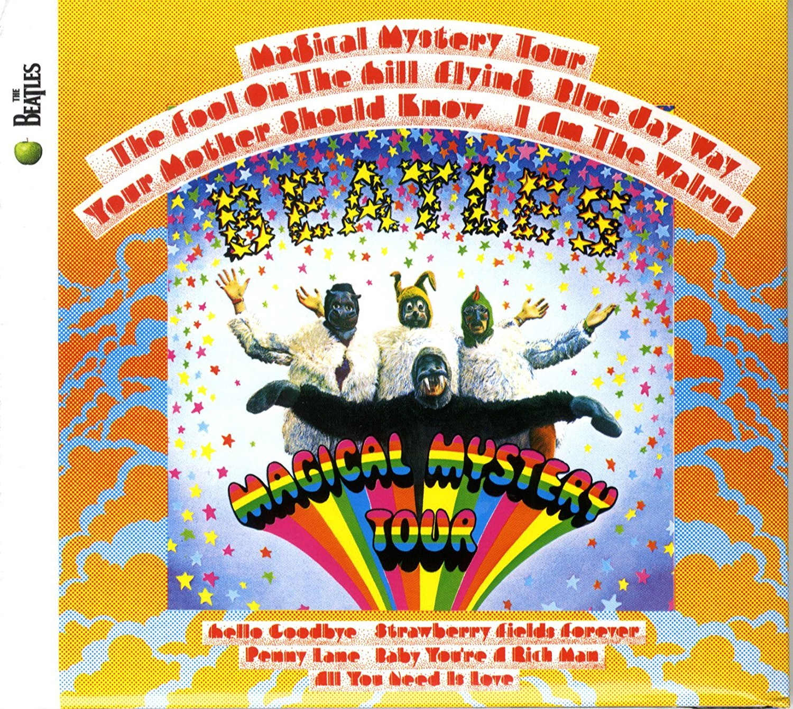

MAGICAL MISTERY TOUR

Los Beatles idearon, escribieron y dirigieron una película para televisión llamada Magical Mystery Tour que se emitió en la BBC Television en Navidad, 1967.
Los temas del album son: